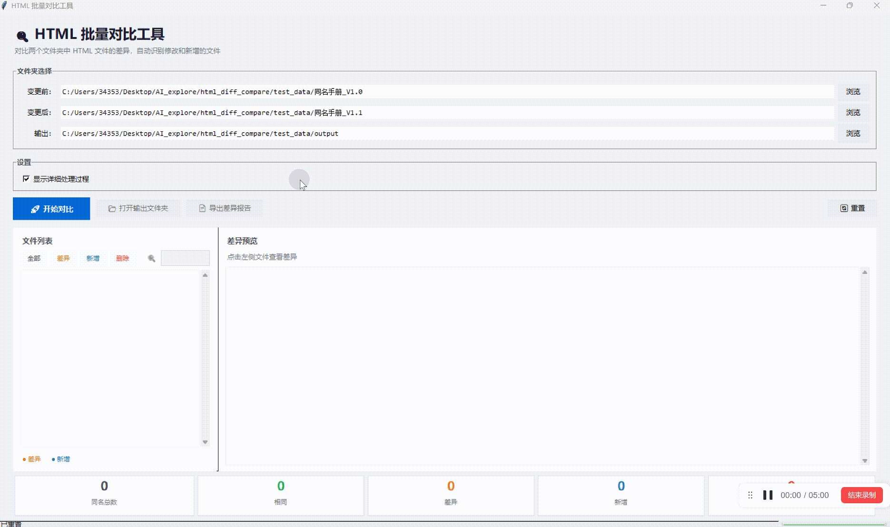

效果
软件主界面

界面布局清晰，分为文件夹选择区、操作按钮、文件列表和差异预览区
对比效果
🟩 绿色背景
新增的内容
新增的内容
🟥 红色背景
删除的内容
删除的内容
🟨 黄色标记
图片的变化
图片的变化
操作演示

完整操作流程：选择文件夹 → 开始对比 → 查看差异 → 导出报告
在信息设计、文档本地化等场景中，经常需要批量对比两个版本的 HTML 文件，传统做法存在以下痛点：
一次改版可能涉及上千个 HTML 文件，逐个手动对比不现实
传统文本 diff 无法识别图片的增删变化
难以直观定位修改位置
改版后同一 topic 对应的文件名可能变化，无法通过文件名直接匹配对应文件
界面布局清晰，分为文件夹选择区、操作按钮、文件列表和差异预览区

完整操作流程：选择文件夹 → 开始对比 → 查看差异 → 导出报告
html_diff_compare.exe 打开工具diff_output）| 参数 | 说明 |
|---|---|
-b / --before | 变更前的 HTML 文件夹路径 |
-a / --after | 变更后的 HTML 文件夹路径 |
-o / --output | 输出目录（可选，默认为变更后文件夹下的 diff_output） |
-v / --verbose | 显示详细处理过程（可选） |
index.json 文件，工具会按照其中定义的映射关系匹配文件（适用于改版后文件名变化的场景）
index.json，则按文件名直接匹配
操作系统：Windows 7 及以上
依赖：无需安装 Python，双击 exe 即可运行